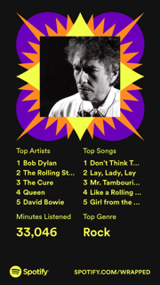
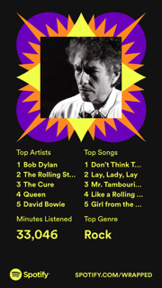
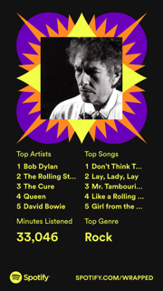

Pictures
 

My goal with this project is to analyze the lyrics of Bob Dylan albums over the years. I will analyze five Bob Dylan albums:The Freewhiln' Bob Dylan (1963),Highway 61 Revisited(1965),Blood on the Tracks (1975),Slow Trains a Coming (1979) and finally Rough and Rowdy (2020).I will create data visualizations that accurately reflect patterns and effectively demonstrate common or consistent themes across his work.
My name is Samantha Moniot and I am a senior Digit major with a double minor in marketing and data visualization. I have been a Bob Dylan fan since the spring of 2022. My favorite Bob Dylan albums are Highway 61 Revisited and Blood on the Tracks and my favorite song is Make You Feel My Love.
